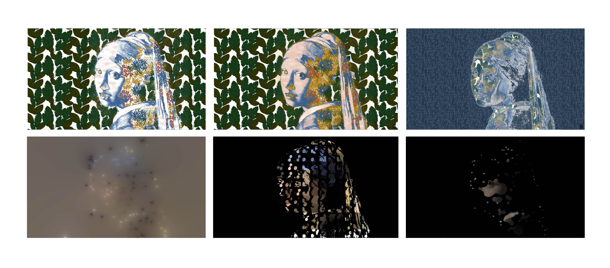

Procedural Reproduction
以程式為畫筆進行再轉譯
此為初次嘗試使用GLSL創作之實驗系列作，使用效果為亮暗分析作為拼貼效果依據、Metaball效果解構畫作等。

此為初次嘗試使用GLSL創作之實驗系列作，使用效果為亮暗分析作為拼貼效果依據、Metaball效果解構畫作等。
擷取原畫特殊色，轉化為手繪植物，拼貼再製重現。
以版畫印刷風格凸顯古畫作特殊紋理，並用拼貼元素增添畫面豐富度與不同風格的衝突感。
以蝶古巴特風格凸顯畫作特殊紋理。強化層疊質感。
以變動與融合凸顯畫作質地與特定區域，同時引導視覺走向。
賦予pixels生命。強調畫面是由色彩粒子小單元構成，並使粒子呈現有機動態，且可彼此互動。球體分布在畫作明亮處。
增加粒子間的融合互動，呈現畫作形成的過程。
增加滑鼠與粒子互動，窺探畫作特定部分。
畫面分割數區，各區塊中粒子數目被明暗所影響。